import matplotlib.pyplot as plt5 Visualization
The main reference for this Chapter is [1].
5.1 matplotlib.pyplot
matplotlib is a modern and classic plot library. Its main features are inspired by MATLAB. In this book we mostly use pyplot package from matplotlib. We use the following import convention:
5.1.1 matplotlib interface
matplotlib has two major application interfaces, or styles of using the library:
- An explicit
Axesinterface that uses methods on aFigureorAxesobject to create other Artists, and build a visualization step by step. You may treat thisFigureobject as a canvas, andAxesas plots on a canvas. There might be one or more plots on one canvas. This has also been called an object-oriented interface. - An implicit
pyplotinterface that keeps track of the lastFigureandAxescreated, and adds Artists to the object it thinks the user wants.
Here is an example of an explicit interface.
fig = plt.figure()
ax = fig.subplots()
ax.plot([1, 2, 3, 4], [0, 0.5, 1, 0.2])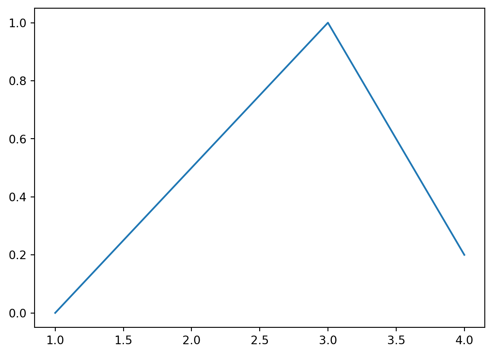
Here is an example of an implicit interface.
plt.plot([1, 2, 3, 4], [0, 0.5, 1, 0.2])
Note
If the plot is not shown, you may want to type plt.show() to force the plot being rendered. However, to make plt.show() work is related to switching matplotlib backends, and is sometimes very complicated.
The purpose to explicitly use fig and ax is to have more control over the configurations. The first important configuration is subplots.
.subplot().subplots().add_subplot()
Please see the following examples.
Example 5.1
plt.subplot(1, 2, 1)
plt.plot([1, 2, 3], [0, 0.5, 0.2])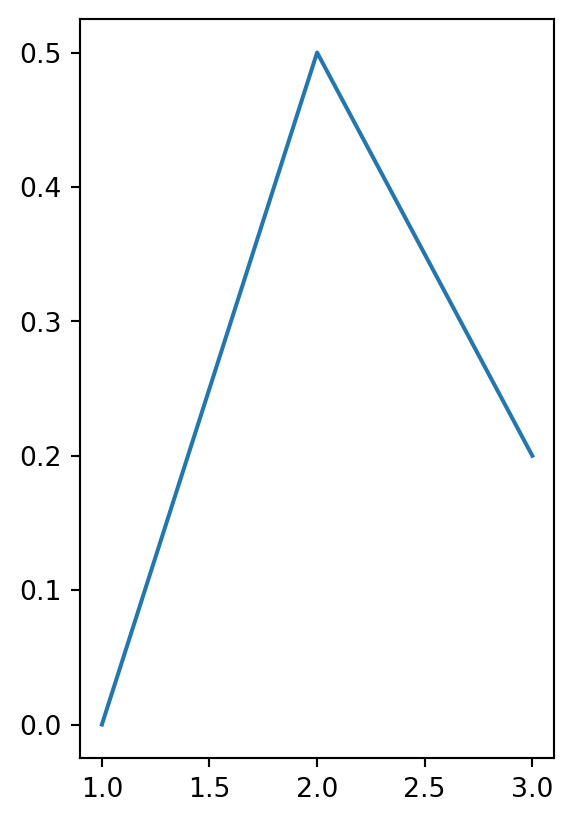
Example 5.2
plt.subplot(1, 2, 1)
plt.plot([1, 2, 3], [0, 0.5, 0.2])
plt.subplot(1, 2, 2)
plt.plot([3, 2, 1], [0, 0.5, 0.2])
Example 5.3
fig, axs = plt.subplots(1, 2)
axs[0].plot([1, 2, 3], [0, 0.5, 0.2])
axs[1].plot([3, 2, 1], [0, 0.5, 0.2])
Example 5.4
import numpy as np
fig = plt.figure()
ax1 = fig.add_subplot(2, 2, 1)
ax2 = fig.add_subplot(2, 2, 3)
ax3 = fig.add_subplot(1, 2, 2)
ax3.plot([1, 2, 3], [0, 0.5, 0.2])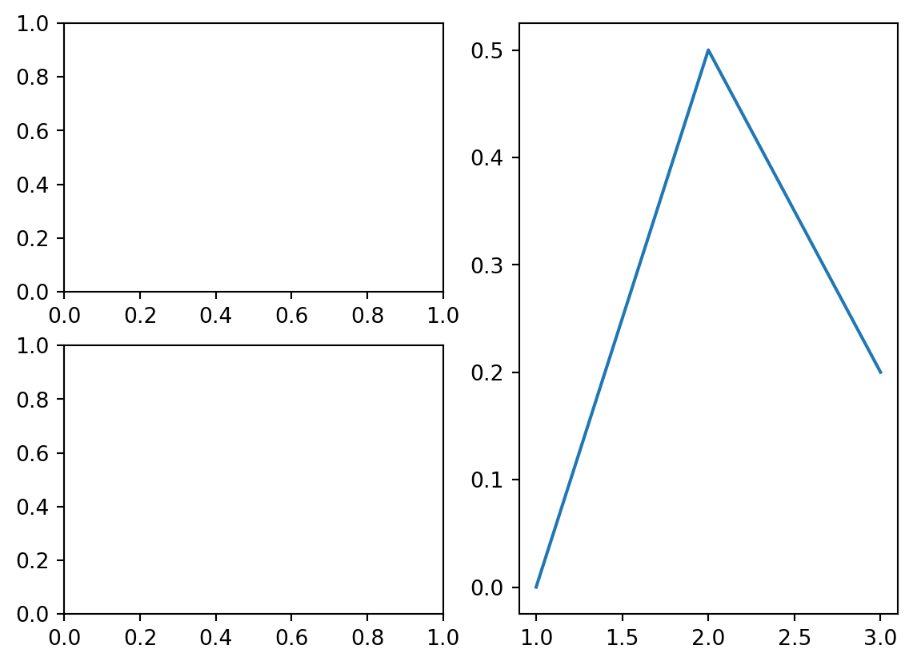
The auguments 2, 2, 1 means that we split the figure into a 2x2 grid and the axis ax1 is in the 1st position. The rest is understood in the same way.
Example 5.5 If you don’t explicitly initialize fig and ax, you may use plt.gcf() and plt.gca() to get the handles for further operations.
plt.subplot(1, 2, 1)
ax = plt.gca()
ax.plot([1, 2, 3], [0, 0.5, 0.2])
plt.subplot(1, 2, 2)
ax = plt.gca()
ax.plot([3, 2, 1], [0, 0.5, 0.2])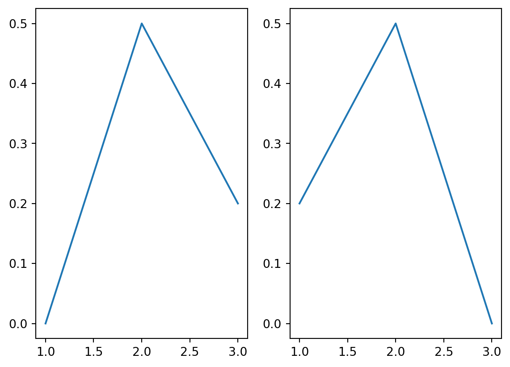
The purpose to explicitly use fig and ax is to have more control over the configurations. For example, when generate a figure object, we may use figsize=(3, 3) as an option to set the figure size to be 3x3. dpi is another commonly modified option.
fig = plt.figure(figsize=(2, 2), dpi=50)
plt.plot([1, 2, 3], [0, 0.5, 0.2])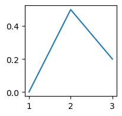
If you would like to change this setting later, you may use the following command before plotting.
fig.set_size_inches(10, 10)
fig.set_dpi(300)
plt.plot([1, 2, 3], [0, 0.5, 0.2])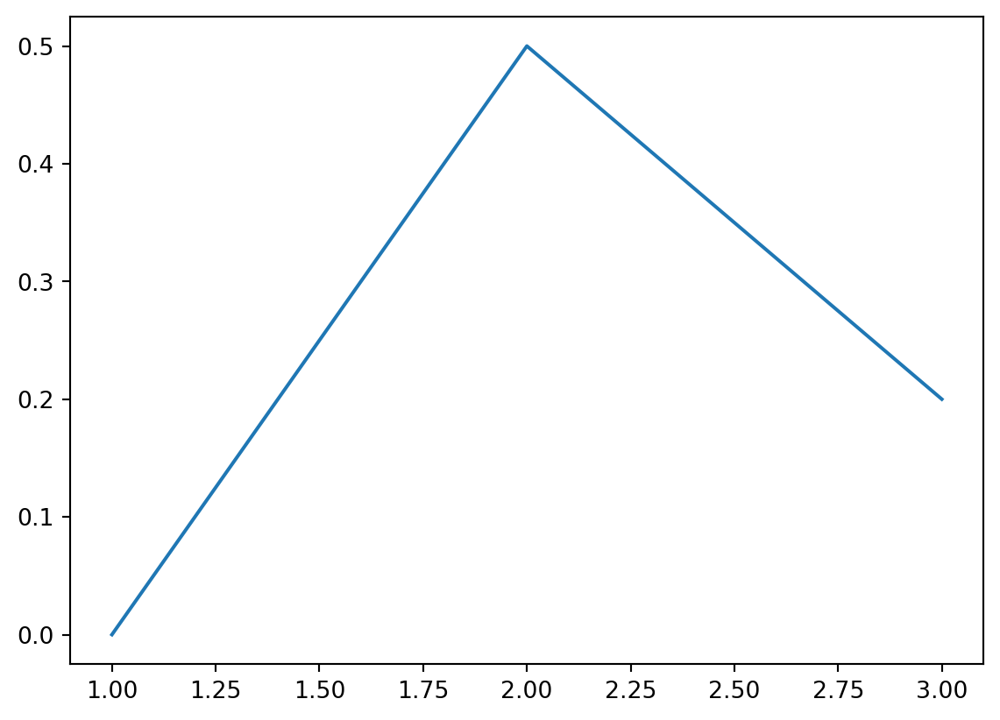
You may use fig.savefig('filename.png') to save the image into a file.
5.1.2 Downstream packages
There are multiple packages depending on matplotlib to provide plotting. For example, you may directly plot from a Pandas DataFrame or a Pandas Series.
Example 5.6
import pandas as pd
import numpy as np
s = pd.Series(np.random.randn(10).cumsum(), index=np.arange(0, 100, 10))
s.plot()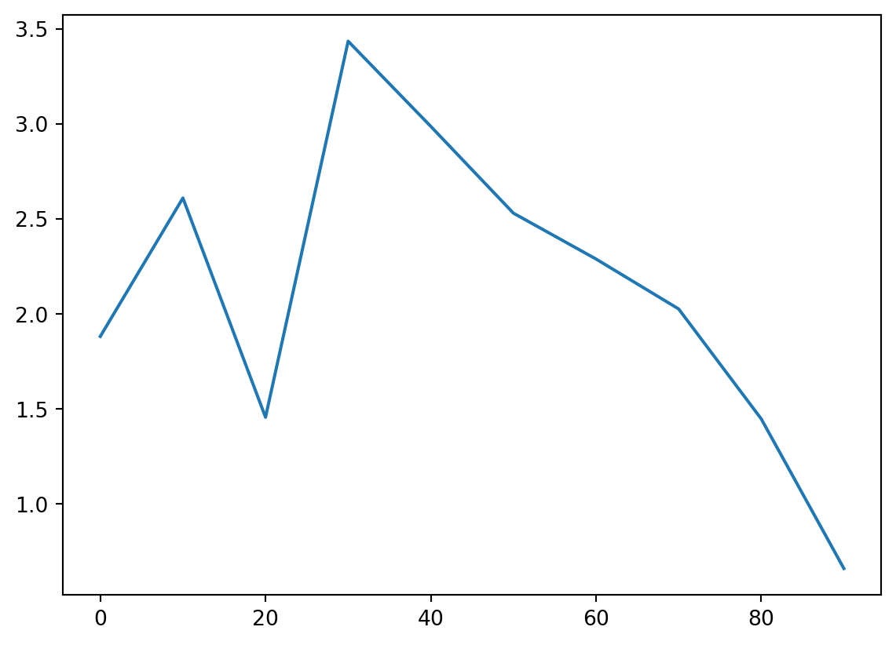
df = pd.DataFrame(np.random.randn(10, 4).cumsum(0),
columns=['A', 'B', 'C', 'D'],
index=np.arange(0, 100, 10))
df.plot()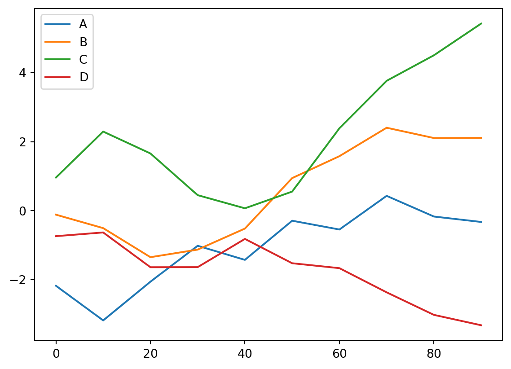
5.1.3 plotting
5.1.3.1 plt.plot()
This is the command for line plotting. You may use linestyle='--' and color='g' to control the line style and color. The style can be shortened as g--.
Here is a list of commonly used linestyles and colors.
- line styles
solidor-dashedor--dashdotor-.dottedor:
- marker styles
oas circle markers+as plusses^as trianglessas squares
- colors
bas bluegas greenras redkas blackwas white
The input of plt.plot() is two lists x and y. If there is only one list inputed, that one will be recognized as y and the index of elements of y will be used as the dafault x.
Example 5.7
plt.plot(np.random.randn(30).cumsum(), color='r', linestyle='--', marker='o')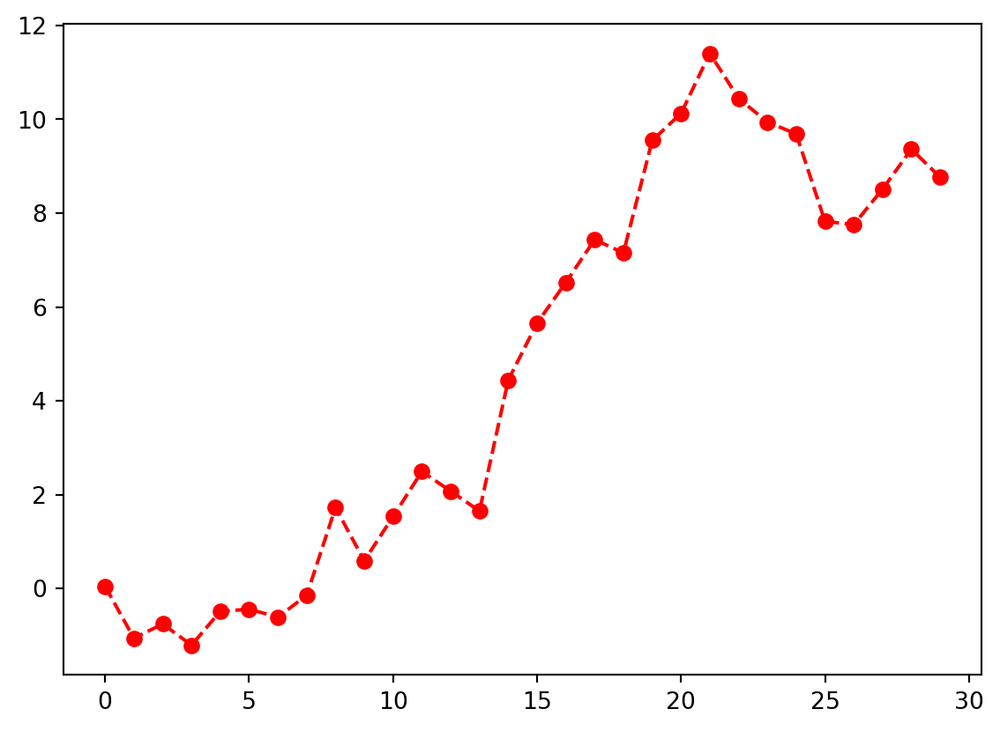
You may compare it with this Example for the purpose of seaborn from next Section.
5.1.3.2 plt.bar() and plt.barh()
The two commands make vertical and horizontal bar plots, respectively.
Example 5.8
import pandas as pd
data = pd.Series(np.random.rand(16), index=list('abcdefghijklmnop'))
fig, axes = plt.subplots(2, 1)
axes[0].bar(x=data.index, height=data, color='k', alpha=0.7)
axes[1].barh(y=data.index, width=data, color='b', alpha=0.7)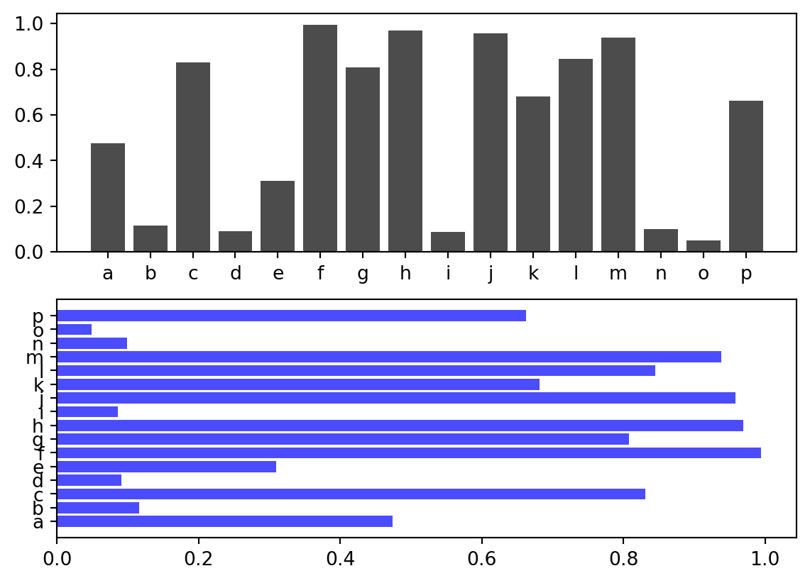
We may also directly plot the bar plot from the Series.
fig, axes = plt.subplots(2, 1)
data.plot.bar(ax=axes[0], color='k', alpha=0.7)
data.plot.barh(ax=axes[1], color='b', alpha=0.7)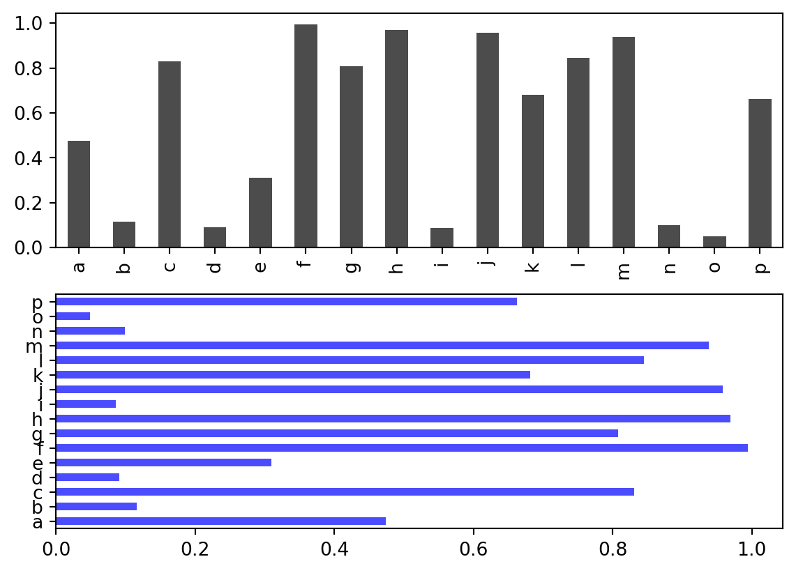
With a DataFrame, bar plots group the values in each row together in a group in bars. This is easier if we directly plot from the DataFrame.
Example 5.9
df = pd.DataFrame(np.random.rand(6, 4),
index=['one', 'two', 'three', 'four', 'five', 'six'],
columns=pd.Index(['A', 'B', 'C', 'D'], name='Genus'))
df| Genus | A | B | C | D |
|---|---|---|---|---|
| one | 0.262462 | 0.116656 | 0.930068 | 0.771102 |
| two | 0.891918 | 0.067489 | 0.972940 | 0.384689 |
| three | 0.159806 | 0.250860 | 0.626908 | 0.184446 |
| four | 0.201407 | 0.272930 | 0.896539 | 0.478261 |
| five | 0.830620 | 0.807160 | 0.004148 | 0.640755 |
| six | 0.357200 | 0.644064 | 0.529182 | 0.829858 |
df.plot.bar()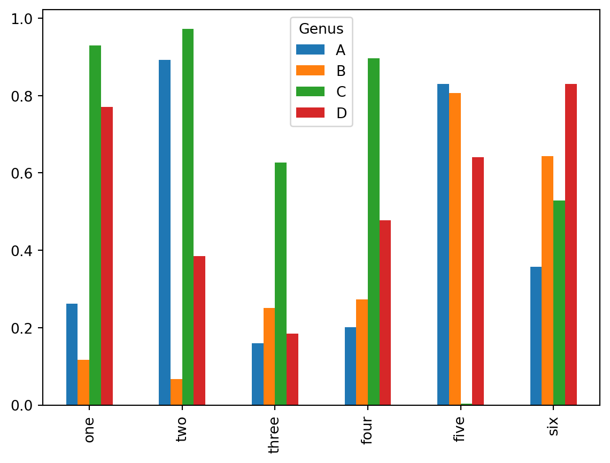
df.plot.barh(stacked=True, alpha=0.5)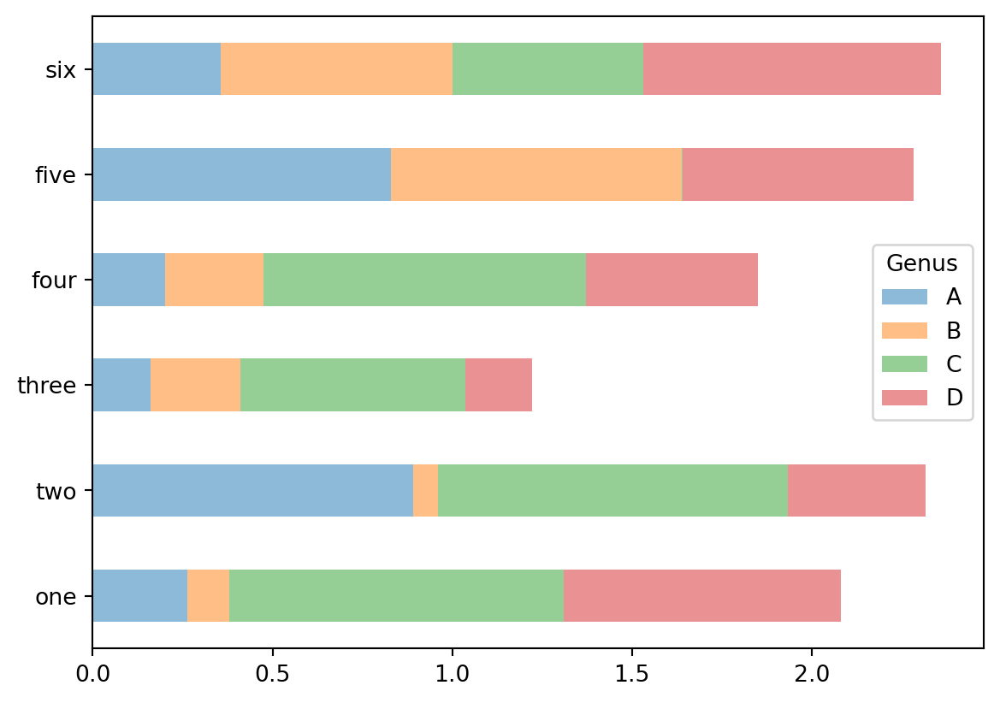
5.1.3.3 plt.scatter()
Example 5.10
import numpy as np
N = 100
data = 0.9 * np.random.rand(N, 2)
area = (20 * np.random.rand(N))**2
c = np.sqrt(area)
plt.scatter(data[:, 0], data[:, 1], s=area, marker='^', c=c)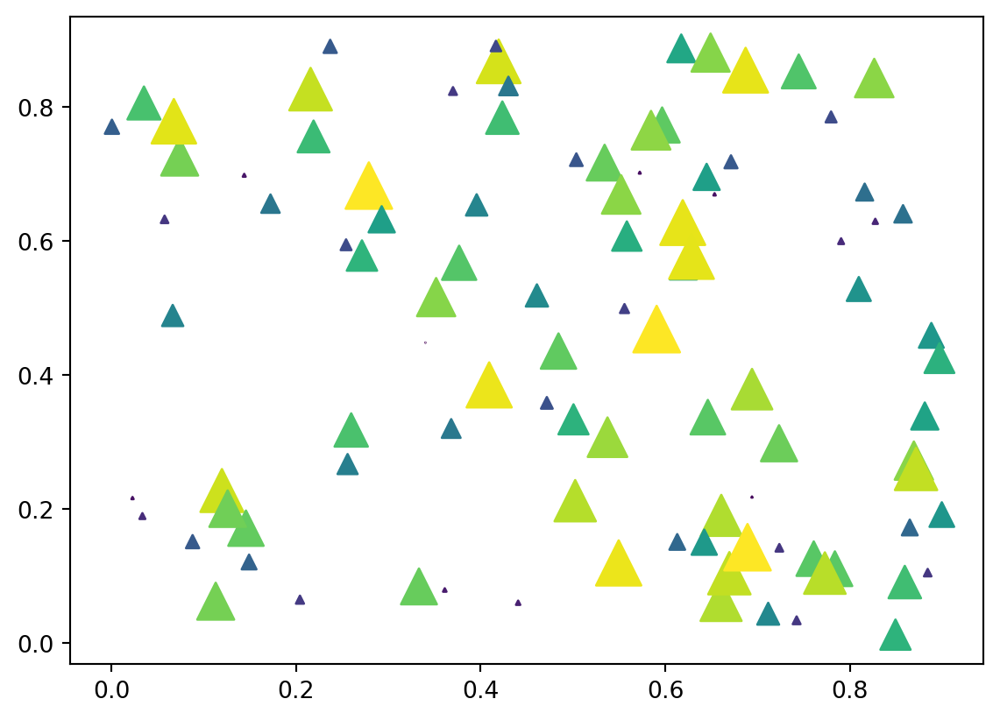
5.1.3.4 plt.hist()
Here are two plots with build-in statistics. The plot command will have statistics as outputs. To disable it we could send the outputs to a temporary variable _.
Example 5.11
mu, sigma = 100, 15
x = mu + sigma * np.random.randn(10000)
y = mu-30 + sigma*2 * np.random.randn(10000)
_ = plt.hist(x, 50, density=True, facecolor='g', alpha=0.75)
_ = plt.hist(y, 50, density=True, facecolor='r', alpha=0.75)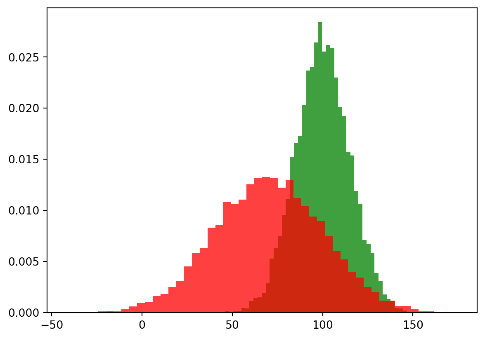
5.1.4 plt.boxplot()
Example 5.12
spread = np.random.rand(50) * 100
center = np.ones(30) * 50
flier_high = np.random.rand(10) * 100 + 100
flier_low = np.random.rand(10) * -100
data = np.concatenate((spread, center, flier_high, flier_low)).reshape(50, 2)
_ = plt.boxplot(data, flierprops={'markerfacecolor': 'g', 'marker': 'D'})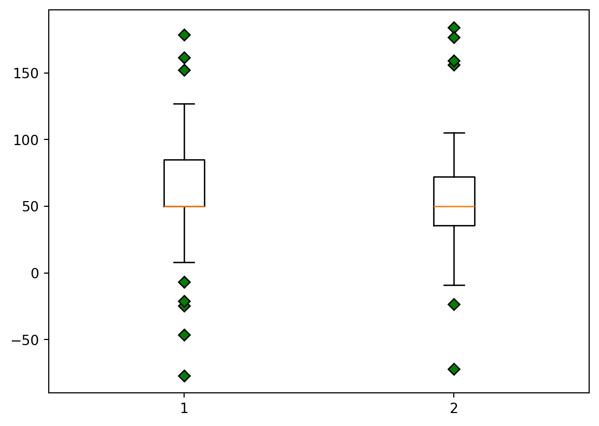
5.1.5 Titles, labels and legends
- Titles
plt.title(label),plt.xlabel(label),plt.ylabel(label)will set the title/xlabel/ylabel.ax.set_title(label),ax.set_xlabel(label),ax.set_ylabel(label)will do the same thing.
- Labels
pltmethodsxlim(),ylim(),xticks(),yticks(),xticklabels(),yticklabels()- all the above with arguments
axmethodsget_xlim(),get_ylim(), etc..set_xlim(),set_ylim(), etc..
- Legneds
- First add
labeloption to each piece when plotting, and then addax.legends()orplt.legends()at the end to display the legends. - You may use
handles, labels = ax.get_legend_handles_labels()to get the handles and labels of the legends, and modify them if necessary.
- First add
Example 5.13
import numpy as np
fig, ax = plt.subplots(1, 1)
ax.plot(np.random.randn(1000).cumsum(), 'k', label='one')
ax.plot(np.random.randn(1000).cumsum(), 'r--', label='two')
ax.plot(np.random.randn(1000).cumsum(), 'b.', label='three')
ax.set_title('Example')
ax.set_xlabel('x')
ax.set_ylabel('y')
ax.set_yticks([-40, 0, 40])
ax.set_yticklabels(['good', 'bad', 'ugly'])
ax.legend(loc='best')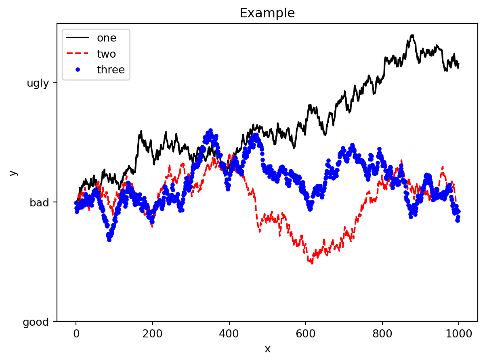
5.1.6 Annotations
- The command to add simple annotations is
ax.text(). The required auguments are the coordinates of the text and the text itself. You may add several options to modify the style. - If arrows are needed, we may use
ax.annotation(). Here an arrow will be shown fromxytexttoxy. The style of the arrow is controlled by the optionarrowprops.
Example 5.14
fig, ax = plt.subplots(figsize=(5, 5))
ax.plot(np.random.randn(1000).cumsum(), 'k', label='one')
ax.text(500, 0, 'Hello world!', family='monospace', fontsize=15, c='r')
ax.annotate('test', xy=(400, 0), xytext=(400, -10), c='r',
arrowprops={'facecolor': 'black',
'shrink': 0.05})Text(400, -10, 'test')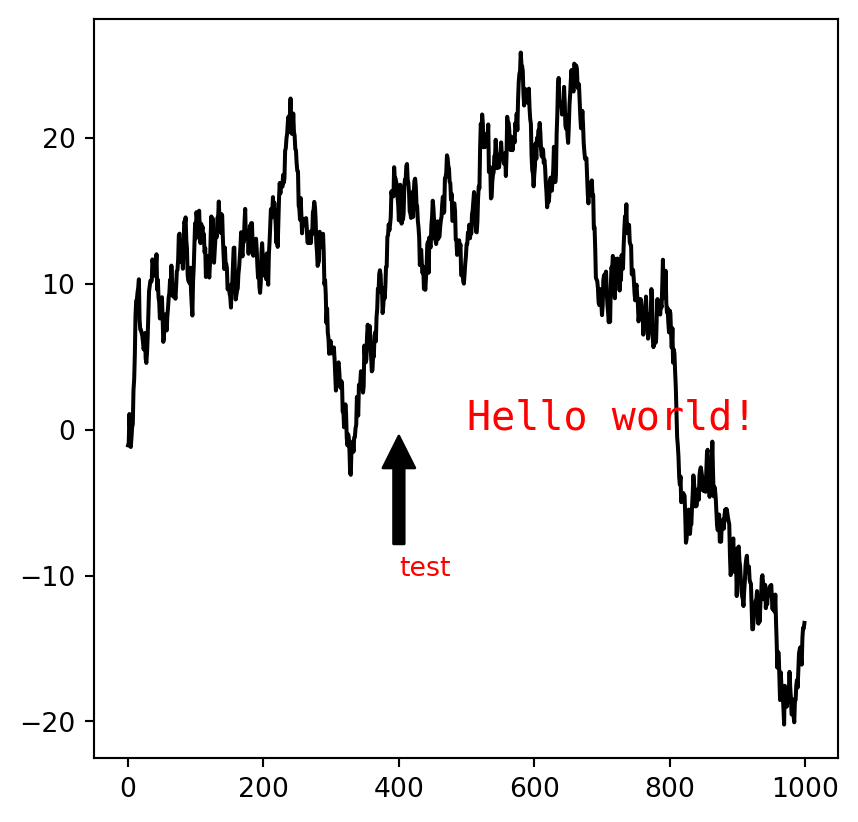
5.1.7 Example
Example 5.15 The stock data can be downloaded from here.
from datetime import datetime
fig, ax = plt.subplots()
data = pd.read_csv('assests/datasets/spx.csv', index_col=0, parse_dates=True)
spx = data['SPX']
spx.plot(ax=ax, style='k-')
crisis_data = [(datetime(2007, 10, 11), 'Peak of bull market'),
(datetime(2008, 3, 12), 'Bear Stearns Fails'),
(datetime(2008, 9, 15), 'Lehman Bankruptcy')]
for date, label in crisis_data:
ax.annotate(label, xy=(date, spx.asof(date) + 75),
xytext=(date, spx.asof(date) + 225),
arrowprops=dict(facecolor='black', headwidth=4, width=2,
headlength=4),
horizontalalignment='left', verticalalignment='top')
ax.set_xlim(['1/1/2007', '1/1/2011'])
ax.set_ylim([600, 1800])
_ = ax.set_title('Important dates in the 2008-2009 financial crisis')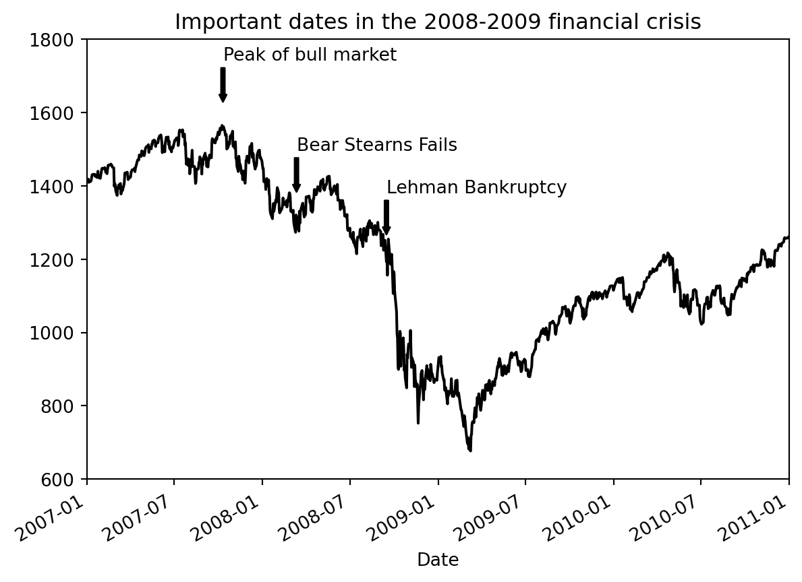
Example 5.16 Here is an example of arrows with different shapes. For more details please read the official document.
fig, ax = plt.subplots()
x = np.linspace(0, 20, 1000)
ax.plot(x, np.cos(x))
ax.axis('equal')
ax.annotate('local maximum', xy=(6.28, 1), xytext=(10, 4),
arrowprops=dict(facecolor='black', shrink=0.05))
ax.annotate('local minimum', xy=(5 * np.pi, -1), xytext=(2, -6),
arrowprops=dict(arrowstyle="->",
connectionstyle="angle3,angleA=0,angleB=-90",
color='r'))Text(2, -6, 'local minimum')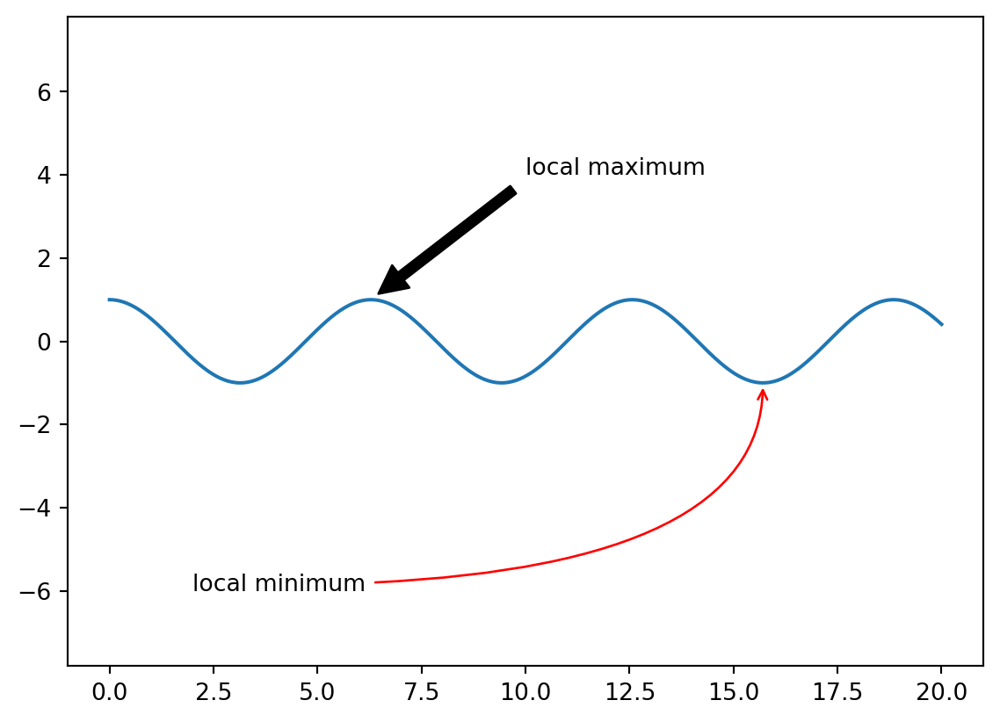
5.2 seaborn
There are some new libraries built upon matplotlib, and seaborn is one of them. seaborn is for statistical graphics.
seaborn is used imported in the following way.
import seaborn as snsseaborn also modifies the default matplotlib color schemes and plot styles to improve readability and aesthetics. Even if you do not use the seaborn API, you may prefer to import seaborn as a simple way to improve the visual aesthetics of general matplotlib plots.
To apply sns theme, run the following code.
sns.set_theme()Let us directly run a few codes from the last section and compare the differences between them.
Example 5.17
plt.plot(np.random.randn(30).cumsum(), color='r', linestyle='--', marker='o')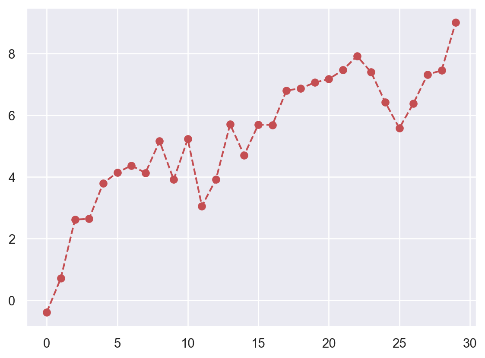
Please compare the output of the same code with the previous example
5.2.1 Scatter plots with relplot()
The basic scatter plot method is scatterplot(). It is wrapped in relplot() as the default plotting method. So here we will mainly talk about relplot(). It is named that way because it is designed to visualize many different statistical relationships.
The idea of relplot() is to display points based on the variables x and y you choose, and assign different properties to alter the apperance of the points.
colwill create multiple plots based on the column you choose.hueis for color encoding, based on the column you choose.sizewill change the marker area, based on the column you choose.stylewill change the marker symbol, based on the column you choose.
Example 5.18 Consider the following example. tips is a DataFrame, which is shown below.
import seaborn as sns
tips = sns.load_dataset("tips")
tips| total_bill | tip | sex | smoker | day | time | size | |
|---|---|---|---|---|---|---|---|
| 0 | 16.99 | 1.01 | Female | No | Sun | Dinner | 2 |
| 1 | 10.34 | 1.66 | Male | No | Sun | Dinner | 3 |
| 2 | 21.01 | 3.50 | Male | No | Sun | Dinner | 3 |
| 3 | 23.68 | 3.31 | Male | No | Sun | Dinner | 2 |
| 4 | 24.59 | 3.61 | Female | No | Sun | Dinner | 4 |
| ... | ... | ... | ... | ... | ... | ... | ... |
| 239 | 29.03 | 5.92 | Male | No | Sat | Dinner | 3 |
| 240 | 27.18 | 2.00 | Female | Yes | Sat | Dinner | 2 |
| 241 | 22.67 | 2.00 | Male | Yes | Sat | Dinner | 2 |
| 242 | 17.82 | 1.75 | Male | No | Sat | Dinner | 2 |
| 243 | 18.78 | 3.00 | Female | No | Thur | Dinner | 2 |
244 rows × 7 columns
sns.relplot(data=tips,
x="total_bill", y="tip", col="time",
hue="smoker", style="smoker", size="size")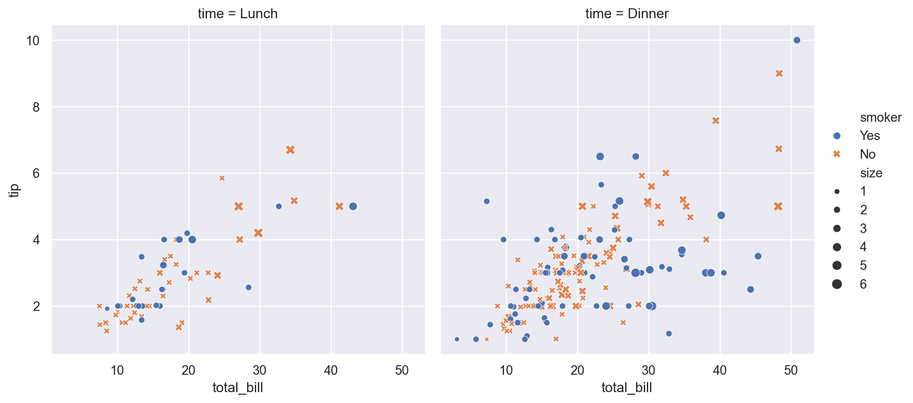
The default type of plots for relplot() is scatter plots. However you may change it to line plot by setting kind='line'.
Example 5.19
dots = sns.load_dataset("dots")
sns.relplot(data=dots, kind="line",
x="time", y="firing_rate", col="align",
hue="choice", size="coherence", style="choice",
facet_kws=dict(sharex=False))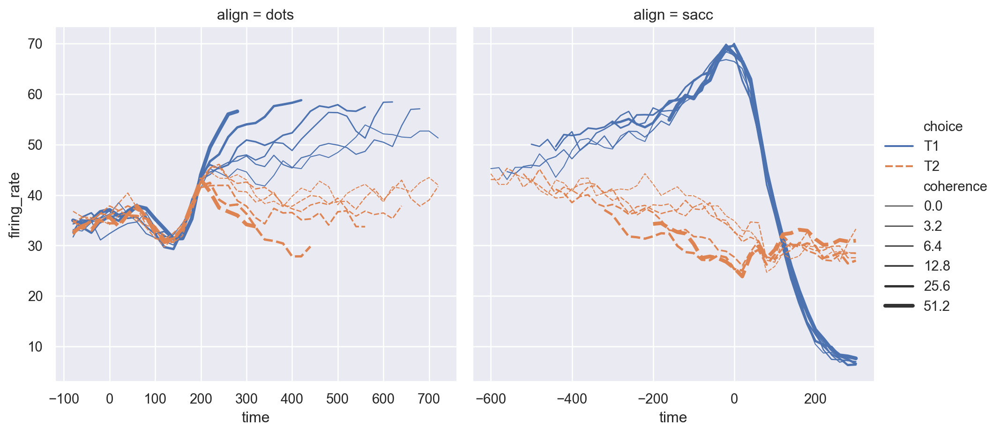
5.2.2 regplot()
This method is a combination between scatter plots and linear regression.
Example 5.20 We still use tips as an example.
sns.regplot(x='total_bill', y='tip', data=tips)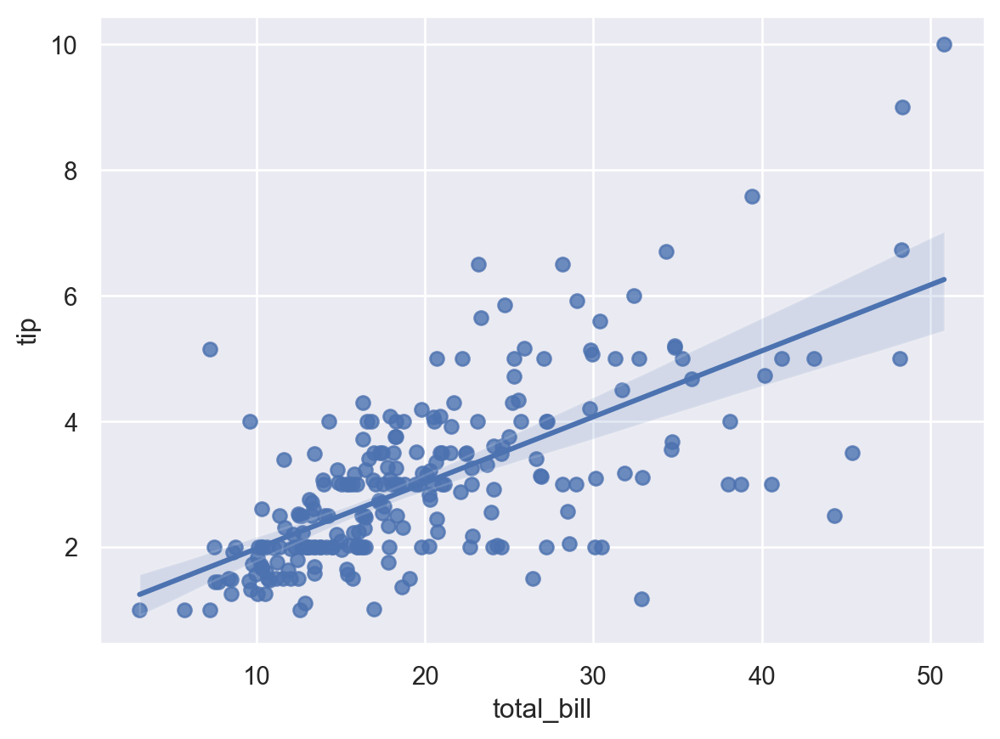
5.2.3 pairplot()
This is a way to display the pairwise relations among several variables.
Example 5.21 The following code shows the pairplots among all numeric data in tips.
sns.pairplot(tips, diag_kind='kde', plot_kws={'alpha': 0.2})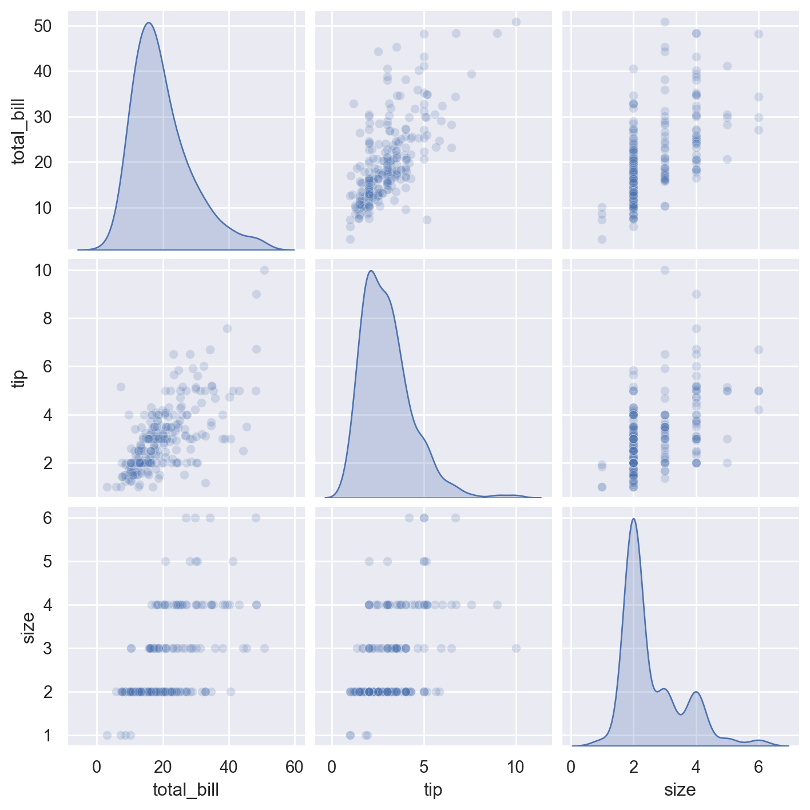
5.2.4 barplot
Example 5.22
sns.barplot(x='total_bill', y='day', data=tips, orient='h')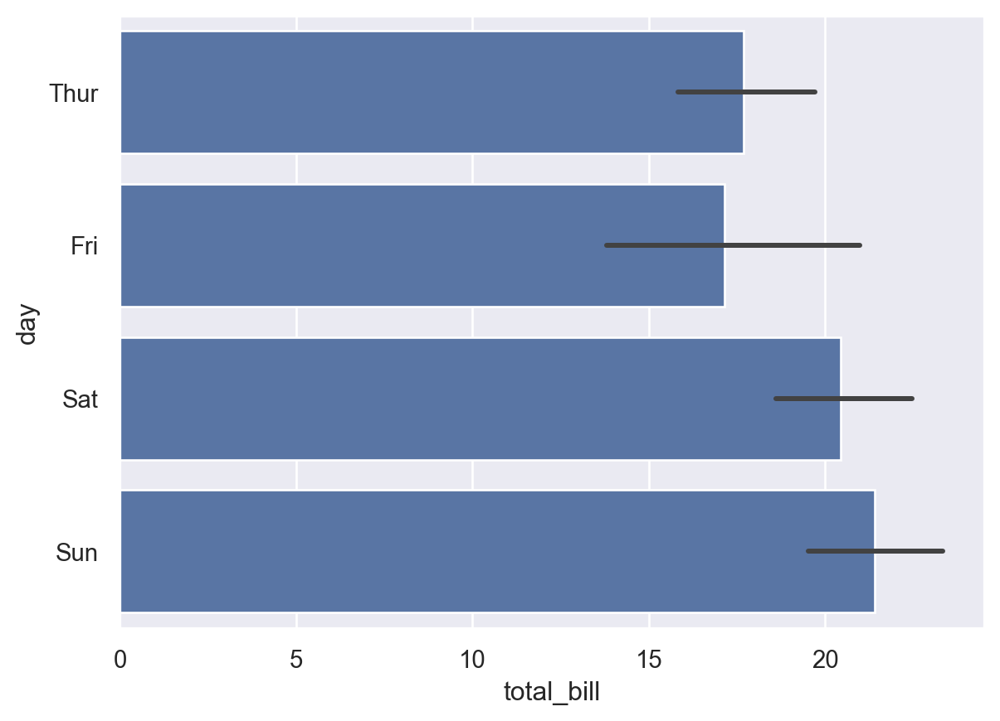
In the plot, there are several total_bill during each day. The value in the plot is the average of total_bill in each day, and the black line stands for the 95% confidence interval.
sns.barplot(x='total_bill', y='day', hue='time', data=tips, orient='h')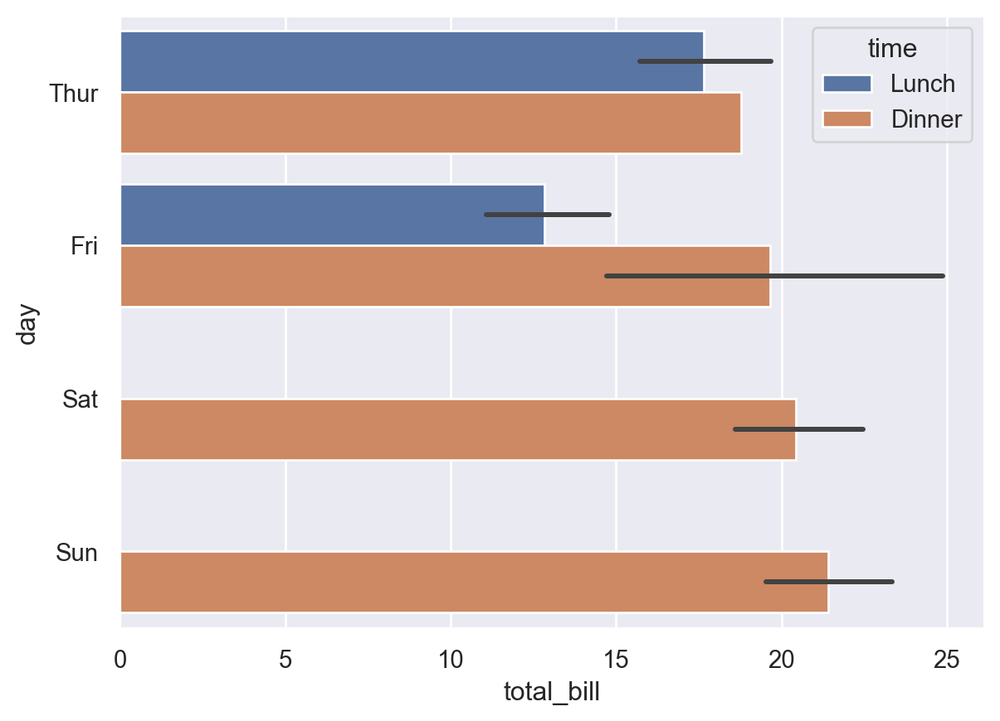
In this plot, lunch and dinner are distinguished by colors.
5.2.5 Histogram
Example 5.23
mu, sigma = 100, 15
x = mu + sigma * np.random.randn(10000)
y = mu-30 + sigma*2 * np.random.randn(10000)
df = pd.DataFrame(np.array([x,y]).T)
sns.histplot(df, bins=100, kde=True)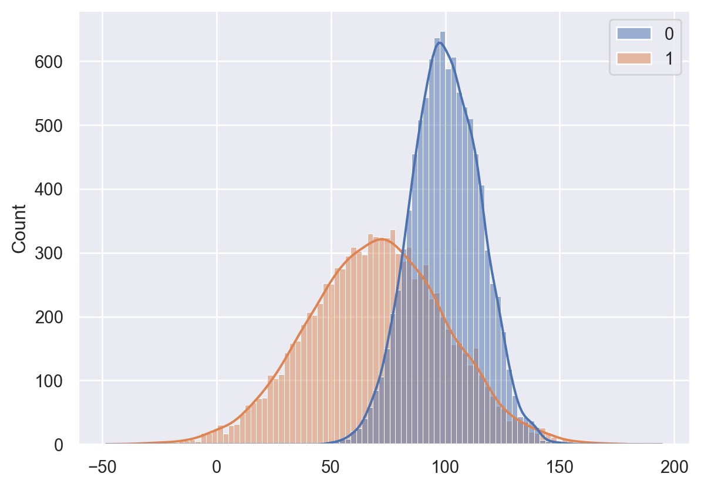
Please compare this plot with this Example
5.3 Exercises
Exercise 5.1 Please download the mtcars file from here and read it as a DataFrame. Then create a scatter plot of the drat and wt variables from mtcars and color the dots by the carb variable.
Exercise 5.2 Please read the file as a DataFrame from here. This is the Dining satisfaction with quick service restaurants questionare data provided by Dr. Siri McDowall, supported by DART SEED grant.
- Please pick out all rating columns. Excluding
last.visit,visit.againandrecommend, compute the mean of the rest and add it to the DataFrame as a new column. - Use a plot to show the relations among these four columns:
last.visit,visit.again,recommendandmean. - Look at the column
Profession. KeepStudent, and change everything else to beProfessional, and add it as a new columnStatusto the DataFrame. - Draw the histogram of
meanwith respect toStatus. - Find the counts of each
recommendrating for eachStatusand draw the barplot. Do the same tolast.visit/Statusandvisit.again/Status. - Explore the dataset and draw one plot.